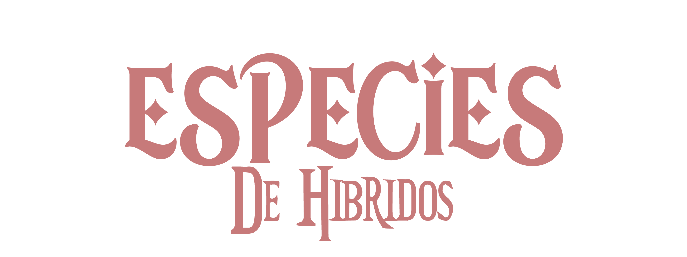

"Clasificar no es temer. Entender no es aceptar. Estudiar a los híbridos es el primer paso para controlar lo que algún día podría reemplazarnos."
En el universo actual de More Dead Than Alive, los híbridos ya no son una rareza biológica o un fenómeno aislado. Son una consecuencia directa de la historia, la guerra y los errores de la ciencia. La existencia de individuos modificados genéticamente con rasgos derivados de entidades consideradas “monstruosas”—tanto del mundo natural como del artificial—es uno de los mayores dilemas científicos, sociales y políticos del último siglo.
Las especies híbridas no nacieron de la evolución natural, sino de la intervención humana deliberada: una combinación de biotecnología, manipulación genética y experimentación militar iniciada en la primera mitad del siglo XXI. Muchos de los sujetos híbridos actuales son descendientes de líneas creadas artificialmente con fines de combate, control ambiental, o experimentación médica fuera de regulación.
A pesar de que algunos híbridos han logrado integrarse discretamente en sociedades humanas, la mayoría vive escondida, marginalizada o vigilada, debido a su origen, su potencial destructivo, o el simple hecho de ser distintos.
La Torre del Héroe, junto con otras instituciones internacionales como FADO y la OPG, ha desarrollado un sistema oficial de clasificación basado en comportamiento, riesgo de inestabilidad, nivel de amenaza potencial y tipo de herencia biológica. Este sistema permite identificar, registrar y contener a individuos según su especie híbrida, priorizando la prevención antes que la confrontación abierta.
A lo largo de este archivo, se detallarán las especies híbridas reconocidas oficialmente hasta la fecha, sus características fisiológicas y conductuales, su relevancia histórica y su relación con los distintos sectores del conflicto contemporáneo.
Comprender a los híbridos no es solo una cuestión científica. Es un acto de responsabilidad institucional, y quizás el único camino viable hacia una sociedad que pueda coexistir con las consecuencias irreversibles de su propia creación. Los hibridos de cualquier tipo se clasifican con el SIM v3.1.